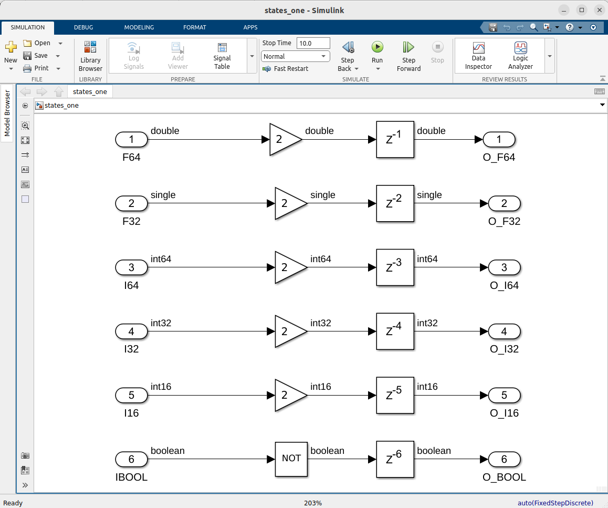
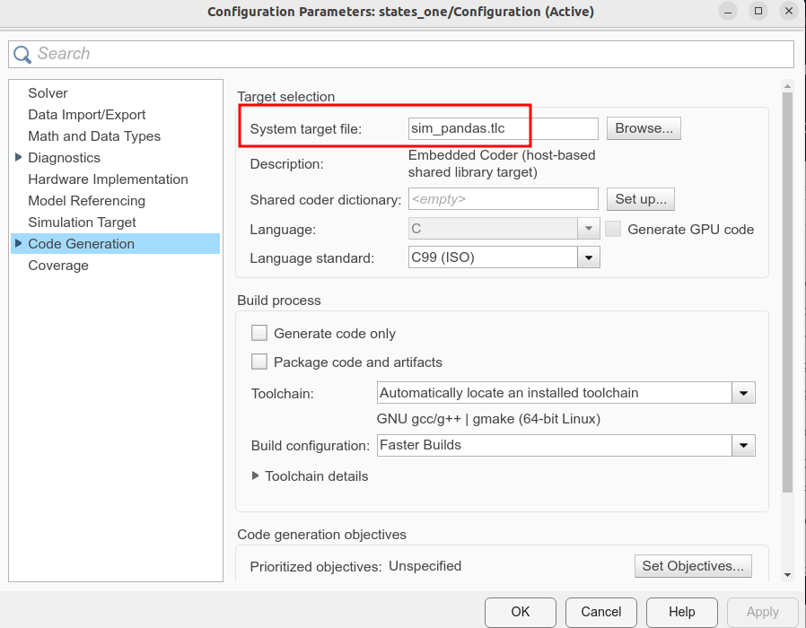
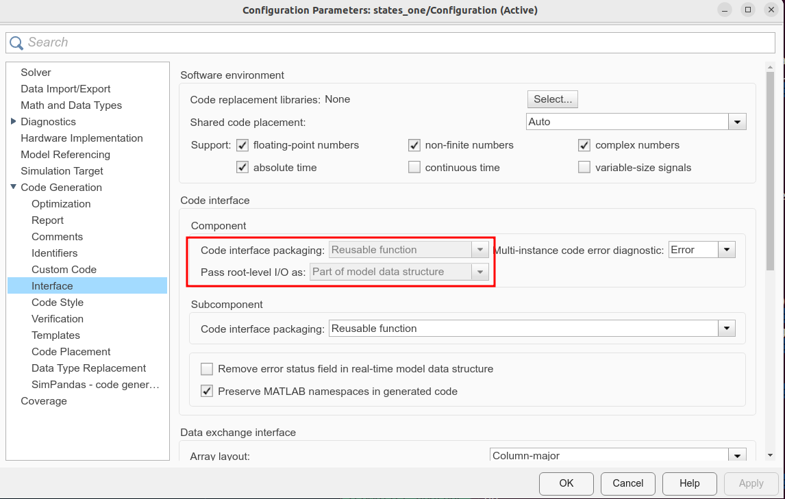

Code generation
Note: There are different constraints and different advantages and disadvantages to using either the Compiler workflows or the Coder workflows. The differences can be found in the documentation of the respective products, so it won't be discussed at length here.
Introduction
Code generation can be used to convert a Simulink® model to a shared library (.so),
which can then be used in a Spark/Databricks® computation. In general, this feature
relies on a Simulink® model being fed data from a Pandas DataFrame.
Note: This feature can currently only be used on a Linux® platform, as Databricks nodes are always running Linux. A
.sois a binary, and thus a platform dependent library. As such, it must be used on the same platform it was compiled for.
Required products
MATLAB®
Simulink®
MATLAB® Coder™
Simulink® Coder™
Embedded Coder®
To see what products are installed, perform the the command ver in a
MATLAB® command window.
Restrictions
Not all Simulink® models will be suitable for this workflow. At least the following requirements must be fulfilled:
The model must have a fixed sample-time
The data fed to the model must have the same sample time has the model
Only scalar inport and outport data is supported (this may change in a later version)
Example
This example contains a very simple model used to show the basic aspects of this feature.
The demo can be found in the Databricks package at
Software/MATLAB/examples/Preview/CodeGeneration/Simulink/.
The model is called states_one, and is the simple model shown in the
picture below.

As can be seen, it has 6 inports and 6 outports. The datatypes are
double, single, int64, int32, int16 and boolean respectively.
The configuration of the model must be set to sim_pandas.tlc as the code generation
target, and furthermore the Code interface packaging must be set too Reusable function
and the Pass root-level I/O as must be set to Part of model data structure,
as seen in the images below.
Note: Provided the Databricks/Spark package was installed correctly, the
sim_pandas.tlctarget will be found by clicking the Browse button in the picture.


Note: This functionality is still being developed. The exact interface may change as the feature matures.
Building
To build the model, it suffices to either start the build from within the model (e.g. by pressing CTRL+B), or from the commandline:
slbuild("states_one")
This will build the shared object (states_one.so) in the same directory.
In the directory with the generated code, states_one_sim_pandas, the code
is found, as well as a Python® library (its source code), some MATLAB® helper functions
for testing the code, and a .zip file artifact of the Python library.
The Python library is what will be calling the shared object, and it will contain some functions to easily interact with the shared object.
The Python package will have the general name simutil.<MODELNAME>_wrapper.simpandas,
in this case simutil.states_one_wrapper.simpandas.
Note: This name may be parameterizable in a later version.
simutil
└── states_one_wrapper
└── simpandas.py
This package contains 2 functions for executing the compiled version of the model,
def run_sim(pdf_in: pd.DataFrame):
""" run_sim
This function will run a Simulink® simulation with inputs from
the Pandas DataFrame argument """
and
def run_sim_iter(iterator):
""" A function to be used with mapInPandas.
It takes an argument an iterator over Pandas DataFrames"""
Example functions
Please note that these example functions must all be called from within the code generation folder. This is to ensure that the library can be found.
MATLAB Example
The function <MODELNAME>_matlab_example (here states_one_matlab_example)
can be used to call the library from within MATLAB®.
It takes a MATLAB® table, converts it to a Pandas DataFrame, and calls the
Python library (which invokes the shared library, i.e. the .so file).
This returns another Pandas DataFrame,
which is converted to a MATLAB® table, which is returned by the function.
function T_OUT = states_one_matlab_example(N)
% states_one_matlab_example
% Example to call .so from MATLAB.
arguments
N (1,1) double = 100
end
In1 = double(1:N)';
In2 = int64(1:N)';
In3 = double(1:N)';
% Create MATLAB table for inputs
T_IN = table(In1, In2, In3);
% Convert this to a Pandas DataFrame
pdf_in = py.pandas.DataFrame(T_IN);
% Call the SO through the Python package
pdf_out = py.simutil.states_one_wrapper.simpandas.run_sim(pdf_in);
% Convert Python DataFrame to MATLAB table
T_OUT = table(pdf_out);
end
Python Example
The function <MODELNAME>_python_example (here states_one_python_example)
can be used to call the library from within Python.
It creates a Pandas DataFrame and calls the Python library (which invokes the shared library). This returns another Pandas DataFrame which is printed out.
# states_one_python_example.py
# Example to call SO from Python.
import numpy as np
import pandas as pd
import simutil.states_one_wrapper.simpandas as swo
def main():
N = 100
# Create some example data
col_In1 = np.asarray(range(N), dtype='float')
col_In2 = np.asarray(range(N), dtype='int')
col_In3 = np.asarray(range(N), dtype='float')
# Create DataFrame for input data
pdf_in = pd.DataFrame(data={'In1': col_In1, 'In2': col_In2, 'In3': col_In3})
print(f'pdf_in:\n{pdf_in}')
# Run simulation
pdf_out = swo.run_sim(pdf_in)
# Print the output
print(f'pdf_out:\n{pdf_out}')
if __name__ == "__main__":
main()
# End of file: states_one_python_example.py
Notebook Example
This example runs in a notebook on Databricks. In this example, the notebook
will be called states_one_notebook_example.py, and is located in the output
directory, states_one_sim_pandas.
It can be imported to Databricks through the portal, or by calling a helper function in MATLAB®.
Note: Many Apache® Spark™ environments also support notebooks, but there are currently no MATLAB® functions in this package to facilitate the upload. Apart from this, the workload should be similar, though.
matlab.databricks.workspace.import(...
"states_one_notebook_example.py", ...
"/Users/user@example.com/tmp", ...
printURL=true)
Please note that the destination directory, in this case
"/Users/user@example.com/tmp", must already exist in the workspace.
Doing this upload will also output a hyperlink for opening the notebook. The notebook starts with some comments stating that the wheel file must first be uploaded to the Databricks environment. It contains example MATLAB® code for doing this, in this example it looks like this:
F = databricks.Files();
F.upload( ...
'/matlab-databricks/Software/MATLAB/examples/Preview/CodeGeneration/Simulink/states_one_sim_pandas/dist/simutil_states_one_wrapper-24.2.0-py3-none-any.whl', ...
'/Volumes/main/default/myvolume/MATLABExamples/states_one/simutil_states_one_wrapper-24.2.0-py3-none-any.whl')
The code can be copied and executed in MATLAB®, which will upload the file. The next
cell contains code for installing this on the cluster, %pip install ....
The full contents of this notebook is as seen below. The data is random, but of the right type. It's meant as a starting point for how this can be used.
#Databricks notebook source
#DBTITLE 1,Example for states_one_wrapper
# This notebook contains example for states_one_wrapper
#COMMAND ----------
#DBTITLE 1,Install the wheel file
# MAGIC %md
# MAGIC # Install the wheel file
# MAGIC To install the wheel file, it must be available on the cluster.
# MAGIC
# MAGIC It can be uploaded from the MATLAB session where it was created like this:
# MAGIC
# MAGIC ```matlab
# MAGIC F = databricks.Files();
# MAGIC F.upload( ...
# MAGIC '/local/EI-DTST/Platforms/azure-databricks-https/Software/MATLAB/examples/Preview/CodeGeneration/Simulink/states_one_sim_pandas/dist/simutil_states_one_wrapper-24.2.0-py3-none-any.whl', ...
# MAGIC '/Volumes/main/default/myvolume/MATLABExamples/states_one/simutil_states_one_wrapper-24.2.0-py3-none-any.whl')
# MAGIC ```
#COMMAND ----------
#DBTITLE 1,Install the wheel file
# Provided the wheel has been uploaded (see previous cell), it can now be installed
%pip install /Volumes/main/default/myvolume/MATLABExamples/states_one/simutil_states_one_wrapper-24.2.0-py3-none-any.whl --force-reinstall
#COMMAND ----------
#DBTITLE 1,Imports
import pandas as pd
from pyspark.sql.types import *
#COMMAND ----------
#DBTITLE 1,Helper functions for madeup data
def C_F64__ex(num):
"""Example code for C type c_double, column C_F64_."""
return float(num)
def C_F32__ex(num):
"""Example code for C type c_float, column C_F32_."""
return float(num)
def C_I64__ex(num):
"""Example code for C type c_int64, column C_I64_."""
return int(num)
def C_I32__ex(num):
"""Example code for C type c_int32, column C_I32_."""
return int(num)
def C_I16__ex(num):
"""Example code for C type c_int16, column C_I16_."""
return int(num)
def C_IBOOL__ex(num):
"""Example code for C type c_bool, column C_IBOOL_."""
return num % 2 == 0
#COMMAND ----------
#DBTITLE 1,Generate the example data
N = 10000
DATA = list()
for di in range(N):
DATA.append((C_F64__ex(di + 0), C_F32__ex(di + 1), C_I64__ex(di + 2), C_I32__ex(di + 3), C_I16__ex(di + 4), C_IBOOL__ex(di + 5),))
#COMMAND ----------
#DBTITLE 1,Create Dataframe schema
dfSchema = StructType([StructField('F64', DoubleType(), True), StructField('F32', FloatType(), True), StructField('I64', LongType(), True), StructField('I32', IntegerType(), True), StructField('I16', ShortType(), True), StructField('IBOOL', BooleanType(), True)])
dfSchema
#COMMAND ----------
#DBTITLE 1,Create the actual Dataframe
DF = spark.createDataFrame(DATA, dfSchema)
#COMMAND ----------
#DBTITLE 1,Show some example data
DF.show(10, False)
#COMMAND ----------
#DBTITLE 1,Run mapInPandas example
from simutil.states_one_wrapper.simpandas import run_sim_iter
DF_OUT = DF.mapInPandas(run_sim_iter, schema='O_F64 double, O_F32 float, O_I64 long, O_I32 int, O_I16 short, O_BOOL boolean');
#COMMAND ----------
#DBTITLE 1,Check results
DF_OUT.show(10, False)
Spark Example
This example calls Databricks from within MATLAB®.
Note: The current version of this feature will assume that the
.sofile is found on a Volume in the Databricks environment. For this example:/Volumes/main/default/myvolume/MyWheels/DLLs/states_one.soThis will be possible to vary in a later version.
This example first creates a Spark Session (by default a serverless one),
and adds the zip artifact with the addArtifact method.
It creates a Spark DataFrame dynamically (with synthetic data),
and then performs a mapInPandas with the run_sim_iter function.
The resulting DataFrame is converted to a MATLAB® table and returned from the function.
function T_OUT = states_one_spark_example(options)
% states_one_spark_example
% Example to call .so from MATLAB.
% The default is to use a serverless session. If this is
% not desired, please specify the additional argument serverless=false.
% NOTE: This example currently only works with Databricks
arguments
options.N (1,1) double = 100
options.serverless (1,1) logical = true
options.profileName (1,1) string
options.authMethod (1,1) matlab.databricks.AuthMethod
end
% Get a serverless Spark Session
args = matlab.utils.addArgs(options, ["authMethod", "profileName", "serverless"]);
spark = databricks.PySparkSession(args{:});
% Add the zip artifact to the session
spark.addArtifact('states_one_artifact.zip', pyfile=true);
% Create some example data
R = spark.range(options.N);
DF = R ...
.withColumn('In1', R.col('id').cast('double')) ...
.withColumn('In2', R.col('id').cast('long')) ...
.withColumn('In3', R.col('id').cast('double')) ...
.select('In1', 'In2', 'In3');
% Run as mapInPandas
pyrun("from simutil.states_one_wrapper.simpandas import run_sim_iter")
DF_OUT = DF.mapInPandas("run_sim_iter", schema="'Out1 double, Out2 long, Out3 double'");
% Create MATLAB table
T_OUT = DF_OUT.table();
end